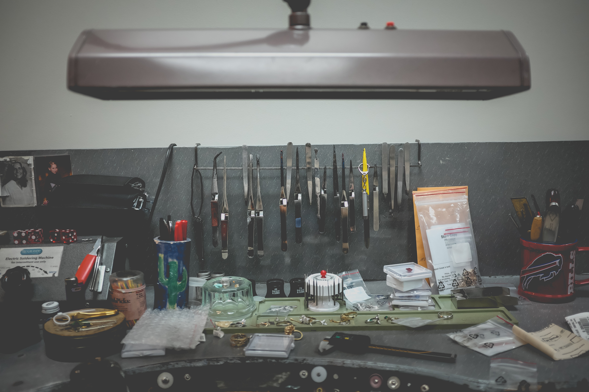
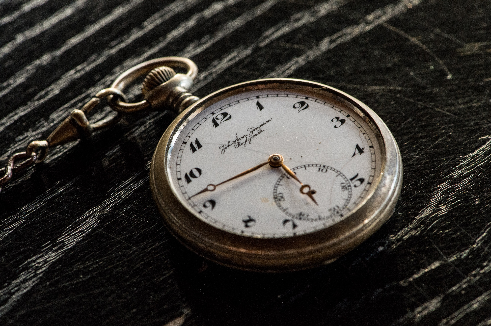
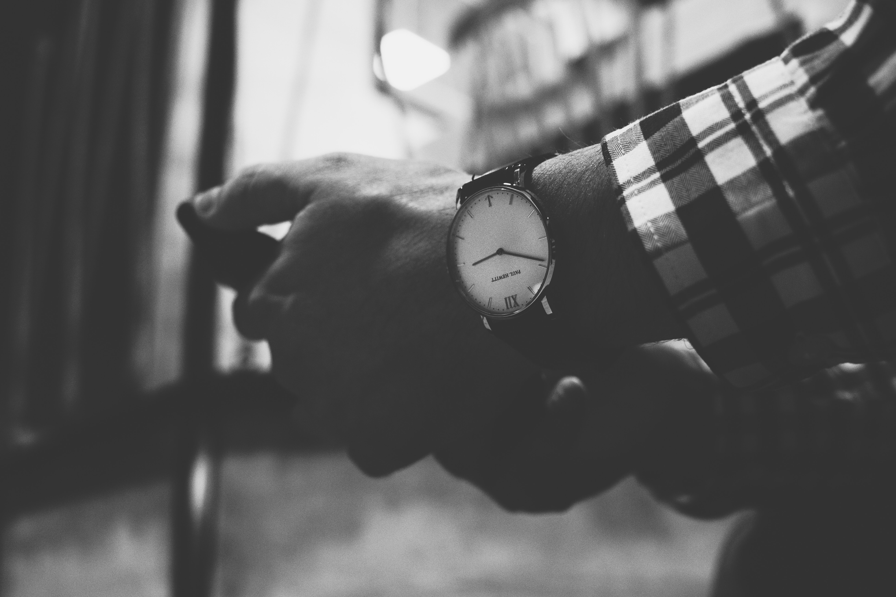

Johnson's Watches TM was founded by two brothers who believed that watches should be simple and sleek.
In the summer of 1967, recent college grads Bill and Bob Johnson went on holiday to Genoa, Italy. During their trip, the purchased two handmade watches from a little known shop in the heart of the city. Upon returning home
to Buxton, OH, the brothers were so inspired by their watches that they decided to start a watchmaking business in their garage at home. From the first day, Bill and Bob followed a simple motto in designing their watches: simple, yet sleek.


Bill and Bobs Garage Workshop, (1969)
Bob Johnsons Watch from Genoa, Italy (1967)
Today, Johnson's watches is the premier manufacturer of quality, handmade timepieces. Our watches are sold worldwide and still follow the vision Bill and Bob had over sixty years ago.
